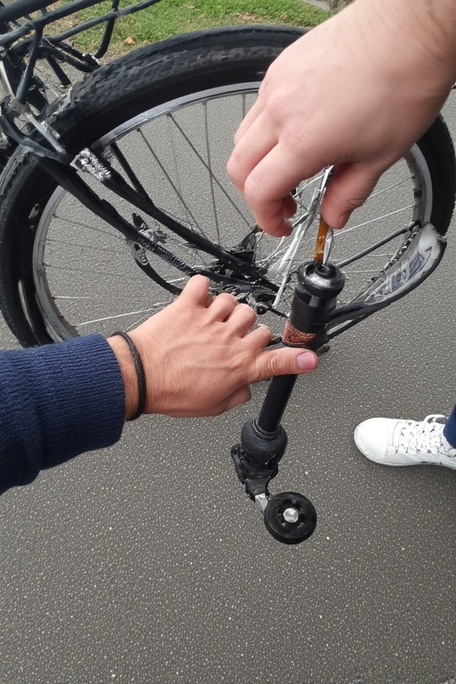
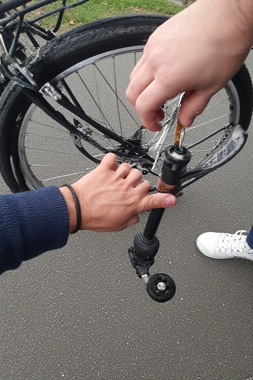

Doe-het-zelf reparaties
Leer eenvoudige reparaties zelf uitvoeren met onze handleidingen en video’s.
Bespaar geld en leer tegelijk handige vaardigheden!
Stap-voor-stap handleiding
Stekker vervangen in 5 stappen
- Haal de stekker uit het stopcontact en knip de oude stekker af.
- Strip 3 cm van de buitenmantel van de kabel.
- Strip daarna de blauwe, bruine en geel/groene draad 0,5 cm.
- Schroef de nieuwe stekker open en sluit de draden correct aan (kleurcodering).
- Schroef de stekker dicht en test veilig of het apparaat weer werkt.
 

Tips & Waarschuwingen
Pro tips
- Koop onderdelen bij een lokale reparatiewinkel, vaak goedkoper en beter advies
- Combineer kleine reparaties: als je toch bezig bent, check meteen andere kabels en stekkers.
- Houd een basisset gereedschap in huis, dat verdient zichzelf snel terug.
Waarschuwingen
- Werk nooit aan apparaten die nog op netstroom zijn aangesloten.
- Vervang alleen onderdelen die je zelf begrijpt; laat complexe reparaties aan professionals over.
- Bij twijfel: stop direct en raadpleeg een reparatiewinkel.